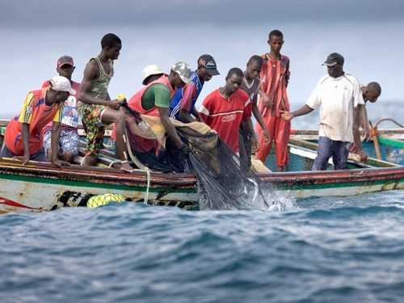
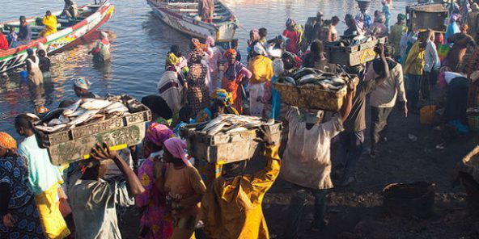
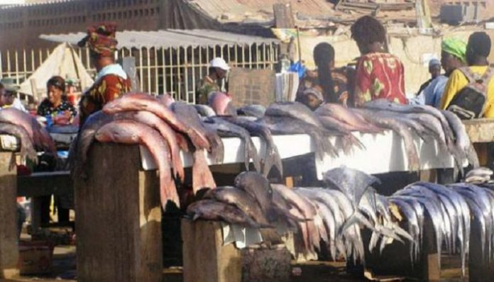
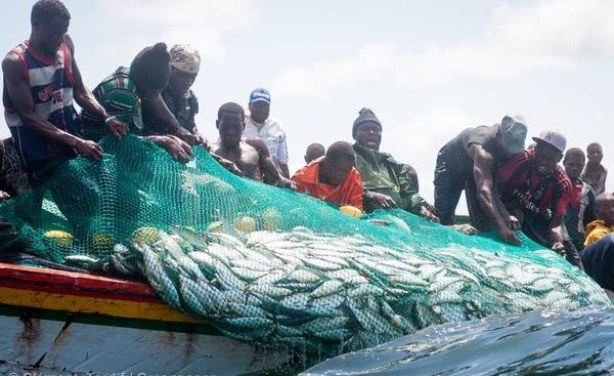
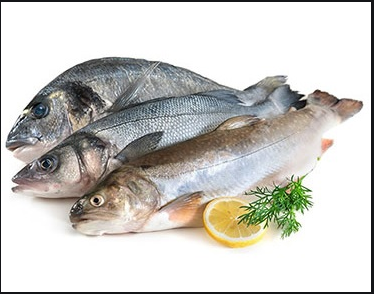
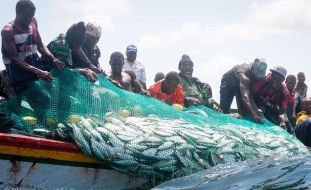
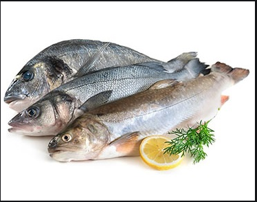

|
|
|||
| Accueil | Transformation | Contact | Idées et Débats |
Les poissons sont des animaux vertébrés aquatiques à branchies, pourvus de nageoires et dont le corps est le plus souvent couvert d'écailles. On les trouve abondamment aussi bien dans les eaux douces que dans les mers : on trouve des espèces depuis les sources de montagnes (omble de fontaine, goujon) jusqu'au plus profond des océans (grandgousier, poisson-ogre). Leur répartition est toutefois très inégale : 50 % des poissons vivraient dans 17 % de la surface des océans1 (qui sont souvent aussi les plus surexploités).



 


